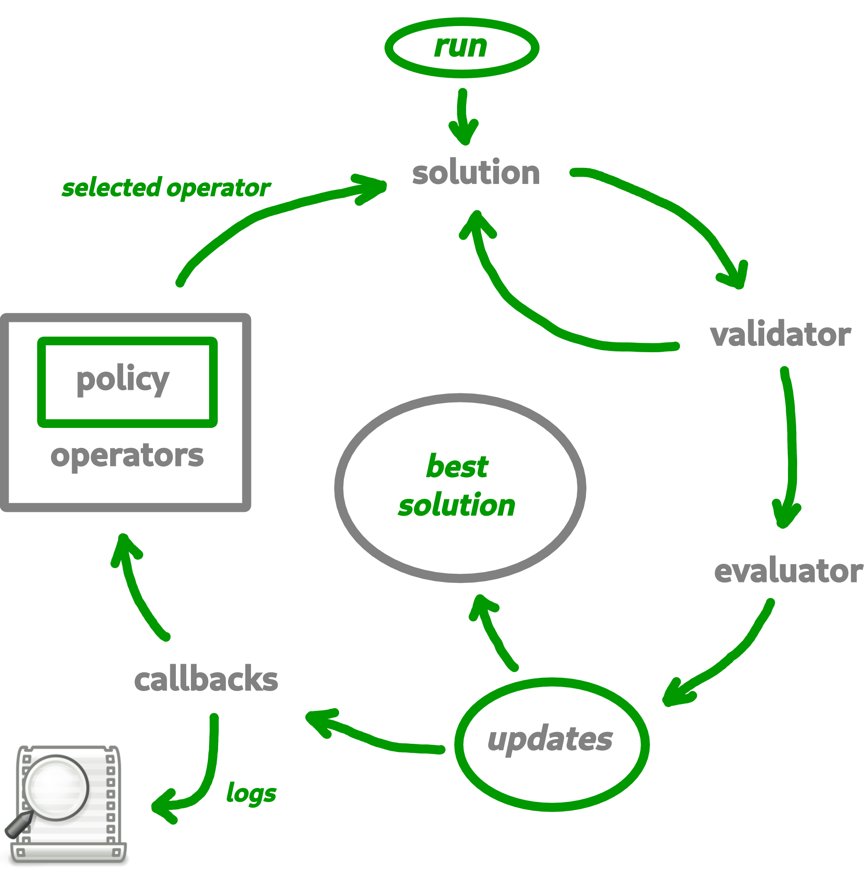

Description¶
{kind=link}
Context¶
Based on its generic behaviour, each Macop algorithm runs can be represented as an interactive loop where you can interact with and specify your needs at each step:
{kind=link}
The package is strongly oriented on combinatorial optimisation (hence discrete optimisation) but it remains possible to extend for continuous optimisation.
Motivation¶
Flexible discrete optimisation package allowing a quick implementation of your problems. In particular it meets the following needs:
Common basis: the interaction loop during the solution finding process proposed within the package is common to all heuristics. This allows the user to modify only a part of this interaction loop if necessary without rendering the process non-functional.
Hierarchy: a hierarchical algorithm management system is available, especially when an algorithm needs to manage local searches. This hierarchy remains transparent to the user. The main algorithm will be able to manage and control the process of searching for solutions.
Flexibility: although the algorithms are dependent on each other, it is possible that their internal management is different. This means that the ways in which solutions are evaluated and updated, for example, may be different.
Abstraction: thanks to the modular separability of the package, it is quickly possible to implement new problems, solutions representation, way to evaluate, update solutions within the package.
Extensible: the package is open to extension, i.e. it does not partition the user in these developer choices. It can just as well implement continuous optimization problems if needed while making use of the main interaction loop proposed by the package.
Easy Setup: as a pure Python package distributed is
pipinstallable and easy to use.
Target Audience¶
This package would meet the expectations of people wishing to:
Solve a problem using an evolutionary algorithm but without developing their own frawmework. They can rely on what the package already proposes but also on its generic and flexible contribution in order to adapt their own content;
Conduct research work leading to the rapid modification of meta-heuristics and the interaction of different algorithms. More precisely:
test new combinations of algorithms. Changing algorithms during evaluations, e.g. different local searches;
provide reinforcement learning during searches (e.g. adaptive operator choice strategy).
test new multi-objective methods quickly thanks to the proposed algorithmic hierarchy allowing to easily decompose the multi-objective problem into single-objective sub-problems.
Take advantage of a system for launching calculations from a backup in order to avoid any loss in case of unwanted program interruption;
Quickly model a problem that is still unknown, i.e. the type of solution and the evaluation function, while taking advantage of the interaction loop proposed by the package.